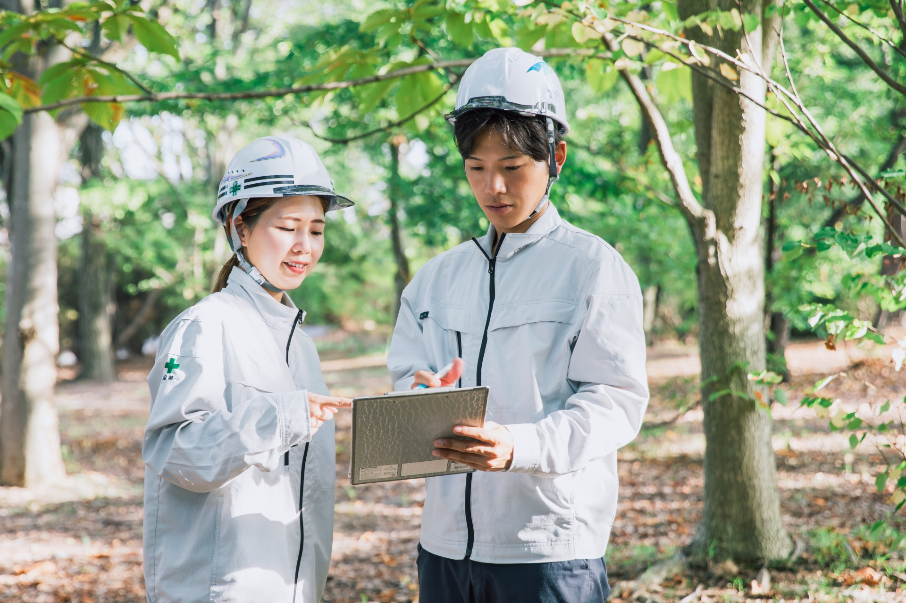
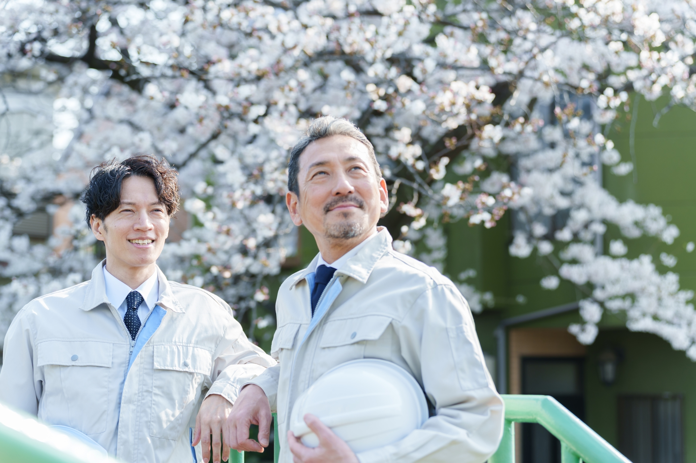

興建エンジニアリング株式会社は、秋田県を拠点に、建設コンサルタント・測量・補償コンサルタント業務を行っている会社です。
1976年の設立以来、地域社会の発展に貢献することを大切にしながら、河川・道路・農業土木・防災など、さまざまなインフラ整備に携わってきました。
技術力だけでなく、「人とのつながり」や「地域への想い」も大切にしながら、社員一人ひとりが成長できる環境づくりに取り組んでいます。
河川・道路・農業土木・防災施設などの調査・計画・設計を行います。
地域性や環境にも配慮しながら、安心して暮らせる社会づくりを支えています。
GNSS測量やUAV（ドローン）測量など、最新技術を活用した測量業務を実施。
地形測量や地籍測量など、インフラ整備の基盤となる重要な役割を担っています。
公共事業に伴う土地調査や物件調査、補償額算定などを行っています。
地域と公共事業をつなぐ重要な業務です。
新卒・第二新卒の方も積極的に採用。先輩社員によるサポートやOJT制度もあり、未経験からでも安心して成長できます。
技術士・RCCM・測量士など、資格取得支援制度が充実。受験費用や講習費なども会社がサポートし、スキルアップを応援しています。

完全週休二日制（土日祝休み）・年間休日122日以上.賞与年3回や各種手当など、長く安心して働ける環境を整えています。
会社の方針や手順に対する理解と正確性を心掛け、日々の職務にあたっています。会社の方針を理解しそれに向かって進むため、決められた手順を踏むことで間違いを少なくし正確に物事を進められるからです。働き方改革の進む当会社では、就業時間内に職務を終えるためONとOFFのメリハリをつけることも意識していることの一つです。
私が仕事をするうえで大切にしていることは、常に相手の視点に立って物事を考える協調性をもつことと、考えをしっかりと発言することです。一見相反することですが、社員全員が同じ方向に向かう（協調性）ために自分のことだけではなく全体をよい方向に向かわせるための発言は会社にとっても自分にとっても成長にもつながります。
就業前に社員全員でラジオ体操（3年連続健康経営優良法人認定）をおこなっています。体と脳を起こすとともに、「これから仕事をするぞ!!」と、気持ちのなかでも切り替えるスイッチになっています。また、立場や所属部門に関係なくおこなうため、社員に一体感が生まれそれがチームワークにつながると感じています。
地域社会の発展に技術と誠意で貢献するため、地域インフラ整備に資する公共測量(全球測位衛星システム(GNSS)や無人航空機(UAV)を用いた基準点測量、地形測量、応用測量など)、地籍測量などを行っています。
秋田高専で学んだ測量知識を活かすことはもちろん、責任感、積極性、コミュニケーション能力、そして自己成長への意欲です。これらを意識することで、仕事の効率が上がり、周囲との良好な関係を築き、自己成長にもつながります。
会社では資格の取得を推奨しているので、これからたくさん経験を積んで、測量士の資格を取得したいです。また、設計の仕事にも興味がありますので、将来的には技術士やRCCM等の資格を取得し、オールマイティーに仕事のできる会社に不可欠な人材になりたいと考えています。
| 募集職種 |
建設関連業（土木建築サービス業） ・建設コンサルタント ・測量 ・補償コンサルタント |
|---|---|
| 応募資格 |
新卒・第二新卒・中途採用 高卒以上の方 / 普通自動車免許（AT限定可）をお持ちの方 ※有資格者歓迎・優遇 ※試用期間：0～6か月（会社の判断により変動） |
| 給与 |
月給：195,900円 ～ 463,500円
初任給実績：
※実績等に応じて上限額を超える格付けの可能性あり
・大学院卒：231,600円 / 大卒：227,200円 ・高専、短大卒：212,100円 / 専修2年：208,900円 ・専修1年：205,900円 / 高卒：195,900円 |
| 諸手当 |
・資格手当：技術士 20,000円（管理技術士は50,000円）、その他資格は5,000円/つ（上限20,000円） ・役付き手当：5,000円 ～ 70,000円 ・家族手当：配偶者 7,000円、18歳未満の子1人につき 2,000円 ・住居手当：上限 15,000円 / 調整手当あり |
| 昇給・賞与 |
昇給：年1回（4月） 賞与：年3回（過去17年連続で期末業績分配金を支給。計10か月の支給実績あり） |
| 勤務時間 |
8:30 ～ 17:30（休憩 12:00～13:00） ※残業月45時間上限（別途全額支給） |
| 休日・休暇 |
完全週休二日制（土日祝休み）、年間休日122日以上 ・夏季休暇（3日間）、年末年始休暇（12/29-1/3） ・特別休暇（裁判員、ボランティア休暇等） |
| 福利厚生 | マイカー通勤可（駐車場完備）、交通費支給（上限15,800円）、慶弔見舞金制度、退職金制度（勤続3年以上） |
「地域に貢献したい」
「一生モノの技術を身につけたい」
あなたの熱意を、興建エンジニアリング
は全力でサポートします。